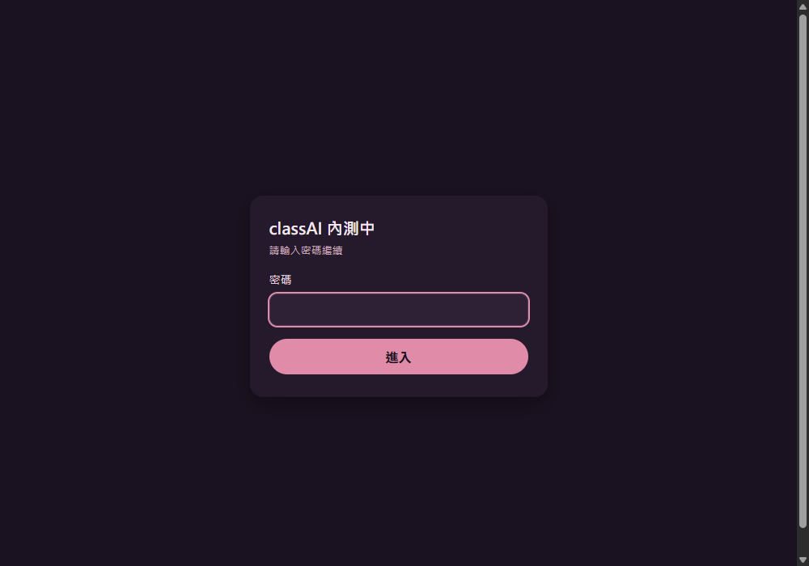

開始之前
登入
選課程
選作業
設定評分標準
批改學生
自動預批
AI 寫評分標準
評語風格
分數送回
批完之後
登記成績
常見問題
START
開始之前
一個幫你快速看過全班作業、由 AI 先給參考分數與評語的小工具。串接你的 Google Classroom，把學生繳交的作業（文字、圖片、PDF）抓進來，AI 依照你設定的評分標準給建議分數與評語，你看過、修改，滿意再按「完成批改」。
AI 給的分數與評語只是草稿，不會自動寫回 Google Classroom。
成績要打幾分還是你決定，改好後用「複製分數與評語」或下載 Excel 成績表，自己回 Classroom 登記。
動手之前確認兩件事：
你的 Google 帳號要先被加進「測試使用者」名單才能登入（找負責的人加你的 email）
要有一份已經在 Google Classroom 發布、且有學生繳交的作業，才有東西可以改
整個流程只有四步，畫面最上面有一條步驟條隨時看得出自己在哪一步；每一頁左上角都有「← 上一步」，選錯不用重來。
LOGIN
登入
打開網址先看到密碼頁，輸入 5407 進站。接著按「用 Google 帳號登入」，請用在 Google Classroom 開課的那個帳號 ，個人 Gmail 帳號也可以開課，登入不同的帳號會找不到課程。
第一次登入可能看到「Google 尚未驗證這個應用程式」，這是正常的，工具還在小範圍測試，沒送 Google 正式審核。按「進階」→「前往（不安全）」繼續即可，只有測試名單裡的帳號登得進去。授權會列出課程、作業、繳交內容、名冊、雲端硬碟等讀取權限，都只用來抓作業給 AI 看，工具不會修改 Classroom 裡的任何東西。

先輸入密碼進站
再用開課的那個 Google 帳號登入
01
選課程
登入後看到你名下開課中的課程。課程超過 6 門時，上面會出現搜尋框，打課名或班級就能找。找不到任何課程？畫面會提醒你可能沒有登入開課的那個帳號，按「換一個 Google 帳號登入」換成正確的帳號。
02
選作業
每份作業會顯示截止日（台灣時間）與滿分，截止日最近的排在最上面 。作業超過 6 份時也有搜尋框。
03
設定評分標準
第一次改這份作業才會出現這一步；設定過的作業會直接跳到第 4 步。三種評分方式選一種：
方式 適合什麼情況 怎麼填 用文字寫要求 大部分作業 打幾句話告訴 AI 要看什麼 填項目算分數 想分項目給分，例如作文 一列一個項目，各自配分 對照標準答案 有固定答案的題目 貼答案文字，或上傳照片／PDF／Excel（8MB 內）
不知道怎麼寫？按範本就好。 前兩種方式都有六個範本：作文、閱讀心得、學習單、數學計算題、英文寫作、專題報告，按一下就帶入評分要求與項目，配分依作業總分自動換算，帶入後可以再改。「填項目算分數」時，下面會即時顯示「各項加起來 X 分／總分 Y 分」，加起來不等於總分會變紅字也不能存，可以按「平均分配」一次分好。
填完按「儲存，開始批改」直接進到第 4 步。之後要改標準，按第 4 步最上面的「修改評分標準」。
04
批改學生
第一次進來會自動去 Classroom 抓學生繳交，不用自己按；之後學生補交了，再按「更新學生繳交」。
按「讓 AI 評分還沒評的 N 位」，AI 同時評好幾位，每評完一位那張卡片就跳出結果，全班大約 1～3 分鐘，可以先切到別的分頁，但不要關掉這一頁 。這顆按鈕只評還沒評過的學生，不會蓋掉你已經改好的分數；只想評某一位，按那張卡片的「請 AI 評這一位」就好。
評分失敗的卡片會變紅、直接寫出原因：額度暫時滿了就等幾分鐘按「只重評失敗的 N 位」；學生還沒交作業就等交了再更新；檔案讀不到就打開原檔自己批改。
AI 的評語預設分三段：【做得好】【可以更好】【下一步】（可以在「評語風格」改），學生看得懂也知道要怎麼改。每張卡片可以：
完成批改 ：這一位改好了，卡片收成一行，自動跳到下一位還沒完成的學生先存起來 ：先存著，之後再回來改複製分數與評語 ：直接貼到 Classroom 的私人留言或成績評語請 AI 重評 ：重新評一次（會蓋掉目前的分數和評語）
電腦上在評語框按 Ctrl + Enter （Mac 是 Cmd + Enter ）就是「完成批改並跳下一位」，一般 Enter 照樣換行。上面的進度條顯示「已完成 X／Y 位」，篩選標籤可以切全部／還沒評分／等你確認／已完成。
AUTO
交給 classAI 之後，不用守著畫面
一份作業設好評分標準之後，接下來 21 天 classAI 會自己每 10 分鐘去 Classroom 看有沒有新繳交，學生交出後 10 分鐘沒再修改，就先讓 AI 評好。你只要照常在 Classroom 出作業，之後打開 classAI：
等你確認 ：首頁最上面列出已經評好的作業，每份寫著 🟢🟡🔴 各幾位、幾位要你自己批、幾位學生重交，點一下就進批改頁✋ 要你自己批 ：學生只交連結、檔案讀不到、AI 連續失敗，classAI 不會亂給分，會寫出原因請你打開原檔看。你自己打完分，這個提醒就消失學生重交 ：AI 建議你還沒動過的會自動重評；你改過或確認過的分數不會被蓋掉，列在「學生重交」讓你決定
背景評分一樣算進你每天的 AI 次數。首頁出現「Google 授權過期」時，按「重新登入」就恢復。
NEW
讓 AI 幫你寫評分標準
評分標準頁的範本旁邊，按「✨ 讓 AI 依作業內容幫我寫」。AI 會參考 Classroom 上這份作業的標題和說明，也可以再補一行年級或想看的重點。
填項目算分數 ：寫出 3～5 個評分項目、每項配分和給分說明，配分加起來一定等於總分用文字寫要求 ：寫一段評分要求給分說明 ：量表每一項下面都可以寫，說清楚什麼樣的作答拿多少，AI 評得更穩定
結果只是填進表單，你看過、改好再按「儲存，開始批改」才算數；用 1 次 AI 次數。
NEW
評語風格：讓評語像你寫的
按頁首的「評語風格」，選 AI 寫評語的格式、語氣和長度：
格式 ：三段式（【做得好】【可以更好】【下一步】，預設）／兩段式／一段話（像手寫短評）語氣 ：溫暖鼓勵（預設）／簡潔直接／活潑親切長度 ：短／中（預設）／長我平常寫的評語 ：貼最多 3 則你以前寫給學生的評語，AI 會學你的用詞和口氣，但不會照抄
先按「用這個設定試寫一則」看效果（用範例作答，不是你學生的作業）。儲存後，之後所有 AI 評分都照這個風格寫，包含背景自動預批；已經評好的不會重寫。
NEW
在 classAI 出作業，分數一鍵送回 Classroom
Google 只讓「出作業的那個工具」把分數寫進 Classroom，所以想讓分數自動回到 Classroom，作業要從 classAI 出：
選作業那頁按「＋ 在 classAI 出新作業」，填標題、說明、滿分、截止時間（選填）
選「直接發布」或「先存成 Classroom 草稿」（想先到 Classroom 附上檔案再自己發布，就選草稿）
第一次會請你到 Google 多允許「查看、建立及編輯課程作業」一項，允許完會回到原本的頁面
建好直接設定評分標準；學生照常在 Classroom 繳交，classAI 在背景先批好
你確認完，按批改頁的「把已確認的 N 位分數送到 Classroom」
草稿分數 ：學生看不到，到 Classroom 看過後按「發還」才算數。classAI 不會幫你發還只送確認過的 ：只送你按過「完成批改」或鎖定的分數，AI 建議的分數不會直接送出改了要再送 ：送出後你又改分，卡片會標「Classroom 上是 X 分，要再送」，再按一次只送改過的
評語 Google 沒開放寫入，請用每位的「複製分數與評語」貼到 Classroom。在 Classroom 自己建的作業，照樣用「複製全班分數」或下載 Excel。
NEW
批完之後：全班常見問題、雷同提醒
全班常見問題 ：批好 5 位以上，批改頁會出現這一塊。按「整理全班常見問題」，AI 讀全班的評語，整理出最多 3 個大家共同卡關的地方、有哪幾位、下次上課可以怎麼補。用 1 次 AI 次數，學生姓名不會送給 AI；分數或評語改過會提示可以重新整理，沒改過不會重算🟠 跟某某的作答很像 ：兩位學生的文字作答有八成以上相同時，卡片會標出來，只是提醒，請自己打開兩份看。很短的答案、對照標準答案的作業不比，避免答對的同學被誤標
END
把成績登記進 Classroom
classAI 不會自動寫回 Classroom 。在 classAI 出的作業可以按按鈕送回草稿分數（見上一段）；其他作業兩種登記方式都可以：
每位學生按「複製分數與評語」，貼到 Classroom
按「下載成績表（Excel）」，得到姓名、分數、評語、狀態四欄的 .xlsx，邊看邊登記，也可以存檔備份
FAQ
常見問題
登入失敗，說「沒有取得 refresh_token」？
之前登入同意過一次，Google 這次沒再給授權碼。到 Google 帳號權限管理頁 找到這個應用程式、移除授權，再重新登入一次就會恢復正常。
學生附件是圖片或掃描的手寫作業，AI 看得懂嗎？
看得懂，圖片和 PDF 都會直接給 AI 讀。但字跡潦草、掃描品質差時準確度會下降，更需要你自己看過再確認。
可以兩個老師一起改同一個班級的作業嗎？
目前不行，一門課只認第一個用這個工具同步過的老師帳號。
我的資料安全嗎？
作業內容會交給 Google Gemini 產生評分建議；作業內容與你的 Google 授權金鑰存在 Cloudflare（不是公開網頁），金鑰有加密存放。工具目前是小範圍測試階段，不建議拿正式重要考試的作業來測。
功能怪怪的、有想法想改，直接回報就好。
classAI v1.19.0 · 由鴻綸科技提供